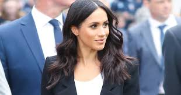
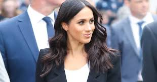
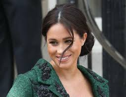
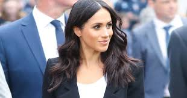

Меган, герцогиня Сассекська (англ. Rachel Meghan Markle) — американська акторка та модель, дружина британського принца Гаррі, герцогиня Сассекська.

Американський генеалог Гері Бойд Робертспровёл дослідження, на підставі якого встановив, що батько Меган є нащадком короля Англії Едуарда III. Згідно з його викладкам, предком Меган по лінії батька був преподобний Вільям Скіппер, який в 1639 році емігрував в Бостон. Сам Вільям Скіппер був нащадком одного з синів Едуарда III - Лайонел, герцога Кларенса. Таким чином, Меган доводиться далекою родичкою своєму чоловікові.
Вона закінчила Північно-Західний університет. У 2002 році вона дебютувала в серіалі «Головний госпіталь» і кілька наступних років одночасно працювала фотомоделлю і актрисою, з'являючись в основному в епізодах таких серіалів як «CSI: Місце злочину Нью-Йорк», «90210: Нове покоління», «Грань» та «Касл". На великому екрані вона з'явилася у фільмах «Пам'ятай мене» і «Нестерпні боси». Народжена і виросла в Лос-Анджелесі, Меган Маркл переїхала в Торонто, де знімалася в телесеріалі «Форс-мажори».
